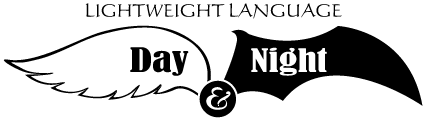

LLDN 開催のお知らせ
Lightweight Language Saturday(通称:LL Saturday)およびLightweight Language Weekend(通称:LL Weekend) に多数のご参加ありがとうございました。
2005年は、Lightweight Language Day and Night(通称:LLDN)として今年もやってきます。

ご来場頂きありがとうございました
昼，夜，それぞれ300人，100人を越える来場者の皆様を迎え，無事イベントを終えることができました。発表者の皆さん，来場者の皆さん，影ながらイベントを支えてくれた方々，本当にありがとうございました。
当日の模様:トラックバック用エントリ
当日の模様をトラックバックして頂く，トラックバック専用のエントリを設置しました。ご来場頂いた皆様は，ぜひ感想をトラックバックしてください。
また，ご来場頂けなかった皆様は，感想文へのリンク集としてご活用下さい。
発表資料
開催前に掲載されていなかったものも含め，発表者の方々が当日使った資料を順次アップロードしています。
開催概要
会場
参加費/定員
- 昼の部
- 1,500円
- 夜の部
- 1,500円（Tシャツ付き、飲食代別）
- 定員（昼の部）
- 350名（予定）
- 定員（夜の部）
- 120名（予定）
- 参加申込
- 2005年5月27日(金) 申し込み開始
イベントの詳細はこちらをご覧ください。
参加方法
ローソンチケットにてチケットを購入してください。 その際に下記のLコードをご指定いただくと購入が容易に行なえます。- 昼の部 : 32173
- 夜の部 : 32183 （夜の部のチケットは完売しました）
チケットの購入方法
ローソンチケットの購入方法には以下の3つの方法があります。 いずれの方法についてもローソンチケットのサイト内に購入方法の説明が掲載されています。 http://www2.lawsonticket.com/pc/p54/manual/index.asp?- ローソンの店舗に行って直接Loppi端末を利用して購入
- 電話予約の上、ローソンの店舗にてLoppi端末を利用してチケットを発券
- Lコード予約 : 0570-063-003 (24時間営業)
- オペレータ予約 : 0570-000-403 (10:00-20:00)
- Webサイトで予約の上、ローソンの店舗にてLoppi端末を利用してチケットを発券
- 注意:この場合、会員登録(有料)が必要です
Created by
ats
Last modified 2005-08-29 09:57 PM
Last modified 2005-08-29 09:57 PM